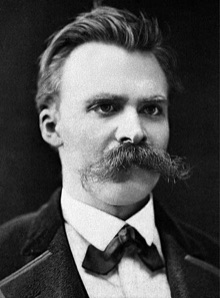

1844-1900 · The 1800s
← The philosophy map · About Nietzsche
Do hard times really make us stronger, or is that just a story we tell ourselves?
A friend fails an important exam, loses a job or gets their heart broken. Sooner or later someone says, "What doesn't kill you makes you stronger." Is that wise advice, or a quick way to avoid real sympathy? The line comes from a German philosopher who knew a lot about pain.
Read one part at a time. After each part, close your eyes and answer the question before you check.
Friedrich Nietzsche was born in 1844 in Röcken, a village in Germany. His father, a Lutheran pastor, died when Friedrich was a small child. He became a brilliant student of ancient Greek and Latin texts, and in 1869, aged only 24, he was made a professor at the University of Basel in Switzerland. It was an amazing start. But he suffered from terrible headaches and poor eyesight, and his health grew worse every year.
What was unusual about Nietzsche's job at Basel?
In 1879 his illness forced him to leave the university. For the next ten years he lived on a small pension and moved between cheap rooms in the Swiss mountains and Italian towns. He was often lonely and in pain, but he wrote book after book, including Thus Spoke Zarathustra (1883). Very few people bought them. Out of this hard life came one of his most famous lines: "What does not kill me makes me stronger."
How did Nietzsche live after he left the university?
In January 1889, in Turin, Nietzsche collapsed. According to a famous story, he threw his arms around a horse that was being whipped in the street. His mind never recovered, and he died in Weimar in 1900. His sister then took control of his papers and edited them to fit her own politics. Later the Nazis misused his ideas, although in his own books he had criticised German nationalism and hatred of Jews.
What happened to Nietzsche's work after his death?
Each word is hidden in a sentence. Read it aloud and say what you think the bold word means. Then reveal and compare.
Which sentences show someone carrying values given by others, like the camel, and which show someone creating their own, like the child? Decide together, then reveal.
Now you: explain Nietzsche's camel, lion and child to a friend who has never heard of them. Speak for about a minute. Use the starters if they help.
Imagine a pill that removes every difficulty from your life: no failures, no heartbreak, no hard exams, but also no struggles to overcome and nothing to be proud of winning. You would be calm and comfortable for ever.
Tap two cards. Use the timer to keep going, and use at least two of the phrases above.
No looking back. Answer from memory first, then check.
What did Kierkegaard mean by 'the leap'?
What did Schopenhauer believe drives all of life, and what gives us relief from it?
Where does our belief in cause and effect come from, according to Hume?
What does Ockham's razor say?
From memory, out loud. Then check.
1. What do the camel, the lion and the child stand for in Nietzsche's idea?
2. Why did Nietzsche leave his job at the University of Basel?
3. What happened to Nietzsche's ideas after he died?
4. What does 'setback' mean? Give an example.